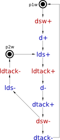
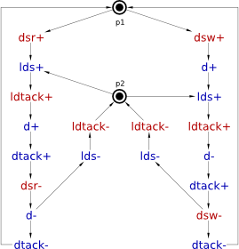

Table of Contents
Synthesis and verification of asynchronous circuits
Familiarise yourself with the Signal Transition Graph plugin and Digital Circuit plugin before proceeding with this tutorial.
In this tutorial you will learn how to specify the intended circuit behaviour with Signal Transition Graphs, synthesise its asynchronous implementation, capture the circuit schematic in Digital Circuit plugin and verify it against the initial specification.
A Signal Transition Graph (STG) is basically a Petri net whose transitions are labelled with signal events. This makes STG a convenient formalism for specification, synthesis and verification of asynchronous circuits.
We use VME bus controller as our running example throughout the tutorial to demonstrate a design flow for asynchronous circuits based on STGs.
VME bus controller
VME bus controller provides an interface between a data bus and a slave device, as shown in the following diagram.

The controller has two modes of operation: reading from the device into the bus (activated by dsr+) and writing from the bus into the device (activated by dsw+).
In the reading mode, a request to read data form the device is made through lds+. When the device has the data ready and this is acknowledged by ldtack+, the controller opens the transceiver by d+ and notifies the bus that data is ready for transfer by dtack+. After the read operation is complete all the signals return to the initial state.
In the writing mode, once the data is stable on the bus, the transceiver is opened by d+, and the write request is made by lds+. When the device acknowledges the receipt of data by ldtack+, the transceiver is closed with d-, thus isolating the device from the bus, and the bus is notified that the write operation is complete by dtack+. After that all the signals return to the initial state.
These two regimes of VME control are captured by the following timing diagrams.
 |
| Timing diagram for the read mode |
 |
| Timing diagram for the write mode |
Modelling
Let us model the read mode of VME controller with an STG. Create a new STG work called stg-vme-read and capture the sequence of events of the corresponding timing diagram.
Do the same for the write mode of VME bus control, in a separate STG work called stg-vme-write.
The result should be similar to the following STGs.
 |
| STG for read operation |
|  |
| STG for write operation |
The two STGs describe the behaviour of the same circuit and need to be composed into one specification by merging their initial states. Create a new STG work called stg-vme-read_write and copy-paste the STGs for stg-vme-read and stg-vme-write works into it. Create a marked place p1 that replaces the places p1r and p1w. Similarly, substitute the places p2r and p2w with a new marked place p2. The result should look like the following diagram.
|  |
| Combined STG for read and write scenarios |
Once the initially marked places are merged, one can notice that transitions ldtack-, lds- and dtack-. Here is the simplified STG.
 |
| Simplified STG for read and write scenarios |
Task 1
- Construct an STG model of VME bus controller based on the timing diagrams for its read and write modes of operation.
- Simulate the STG to better understand the behaviour of VME bus controller.
Verification of the STG model
Task 2
- Verify the STG specification for deadlocks, consistency and output persistence.
- Check is the STG specification has CSC. If not, solve it by inserting a new internal signal to distinguish the states with the same code. See if your solution is different from Petrify.
Synthesis
The STG specification can now be synthesised into an asynchronous circuit implementation either with Petrify or MPSat backend tools. A complex gate solution obtained with Petrify is as follwos:
[d] = dsr ldtack csc0' + dsw (csc0 + ldtack'); [dtack] = d' csc0' (dsr' + dsw) + dsw' d; [lds] = csc0'; [csc0] = dsr' d' (csc0 + dsw') + ldtack csc0;
Notice a new signal csc0 that was introduce by Petrify in order to resolve the CSC conflict.
Task 3
- Synthesize the controller in complex gates using Petrify
- Synthesize the controller in complex gates using MPSat (you may need to resolve CSC first, either manually or automatically using Tools→Encodding conflicts menu).
- Compare the solutions of Petrify and MPSat in terms of size and latency.
- Use Petrify to do the technology mapping onto a gate library.
Circuit capturing
Create a new Digital Circuit model and capture the equations generated by Petrify in form of a gate-level netlist. Your circuit should look similar to the following diagram.

Verification of the circuit implementation
Task 4
- Create an STG describing the environment and assign it to the circuit model.
- Verify that the circuit implementation is deadlock-free, hazard-free and conforms to the environment specification.
- Decompose one of the complex gates by splitting it into simple gates and verify the circuit for hazards. If a hazard is reported (most likely it will be), then play back the trace leading to the problematic state to better understand why the naive decomposition does not work.
Solutions
Download all the Workcraft models discussed in this section here:
VME bus controller models (27.92 KiB, 2M ago)